Research
Benchmarks, frameworks, and studies I have led or contributed to, grouped by theme. Each card links to the paper.
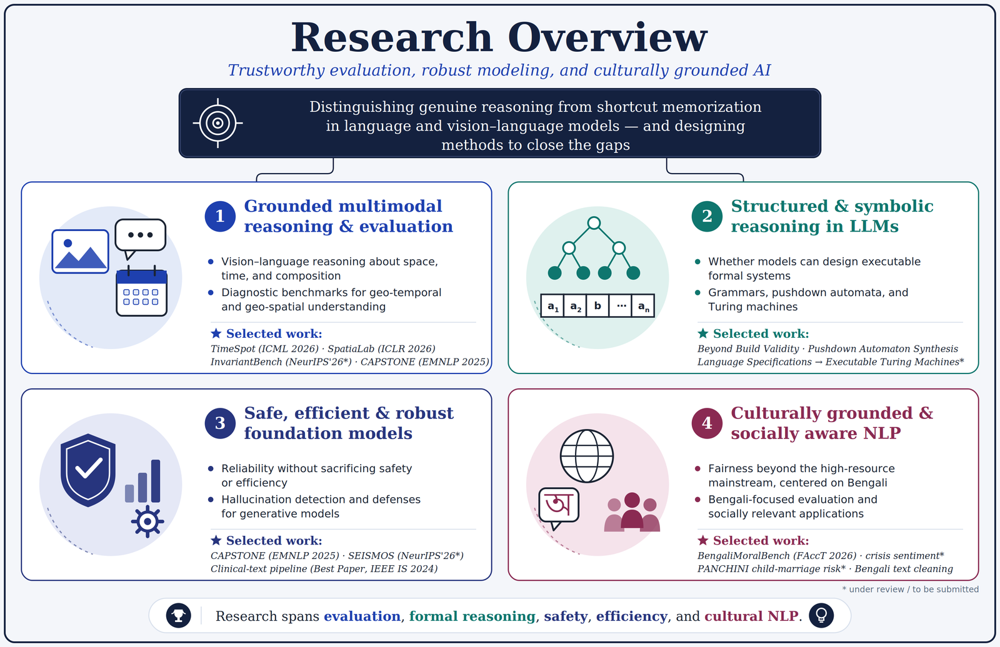
Grounded Multimodal Reasoning
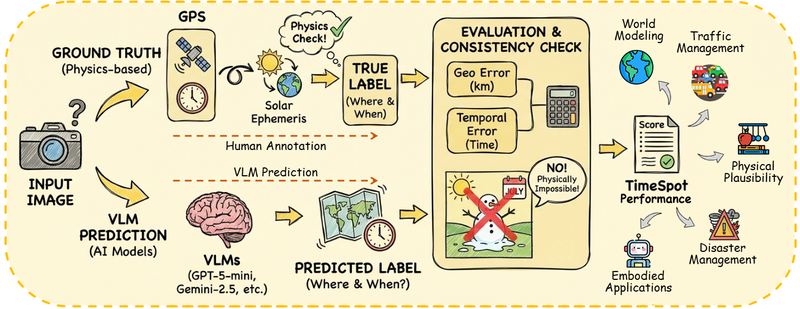
TimeSpot
A benchmark of 1,455 real-world images from 80 countries for geo-temporal reasoning in vision-language models. Models must infer season, time of day, climate zone, and coordinates from pixels alone. ICML 2026.
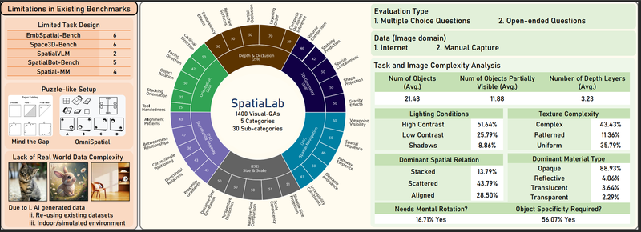
SpatiaLab
1,400 visual question-answer pairs across 30 spatial task types in unconstrained real-world scenes. Exposes a wide gap between VLMs and humans on relational and 3D spatial reasoning. ICLR 2026.
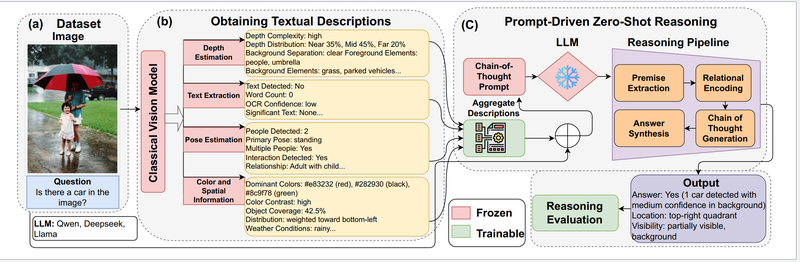
CAPSTONE
Turns off-the-shelf vision model outputs into structured prompts for a frozen LLM, enabling zero-shot visual reasoning with no multimodal training. A 7B pipeline outperforms fully trained VLMs on POPE. EMNLP 2025 Industry Track.
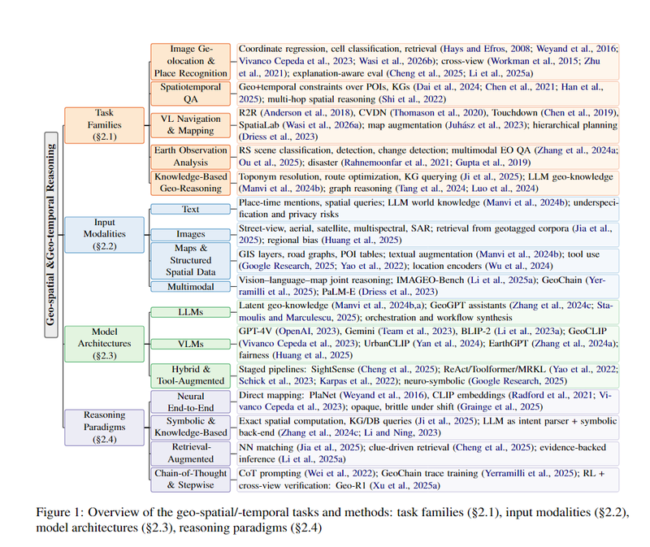
Geo-Spatial and Geo-Temporal Reasoning Survey
A review of how vision-language and large language models handle geo-spatial and geo-temporal reasoning, covering benchmarks, methods, and open problems. AACL-IJCNLP 2026, main conference.
Formal and Symbolic Reasoning
From Language Specifications to Executable Turing Machines
Can LLMs act as computational machine designers? We evaluate whether models translate natural-language specifications into executable Turing machines, judged by behavioral correctness rather than surface plausibility. Findings of EMNLP 2026.
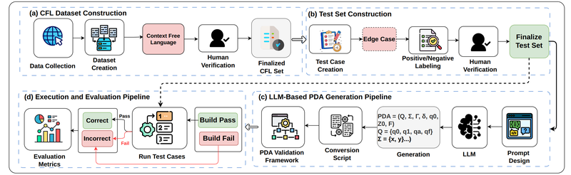
Pushdown Automaton Synthesis
Tests structured computational reasoning by asking LLMs to design pushdown automata for context-free languages, then executing the result against held-out strings. Findings of EMNLP 2026.
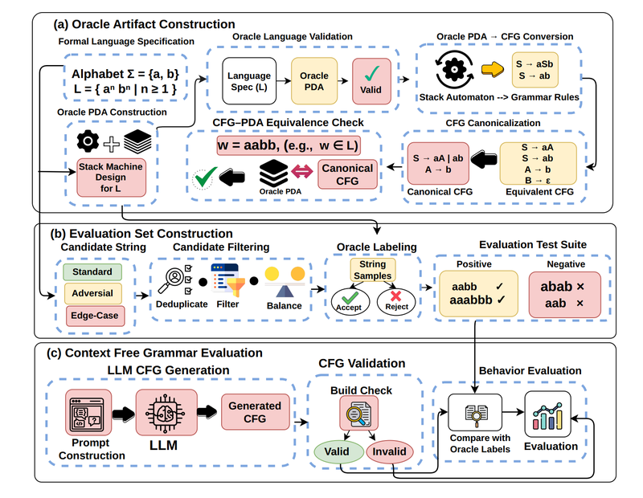
Beyond Build Validity
Evaluates behavioral correctness of LLM-generated context-free grammars, separating grammars that merely compile from grammars that accept and reject the right strings. Under review.
Trustworthy and Culturally Grounded AI
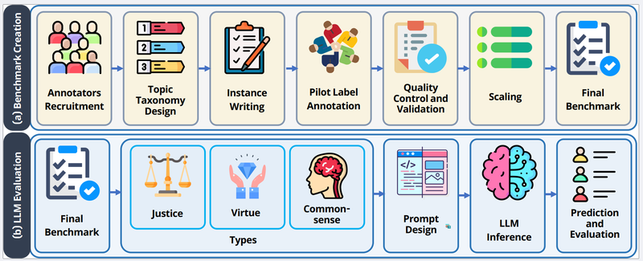
BengaliMoralBench
The first large-scale ethics benchmark for the Bengali language and socio-cultural context, spanning five moral domains and 50 subtopics, annotated through native-speaker consensus using virtue, commonsense, and justice lenses. ACM FAccT 2026.
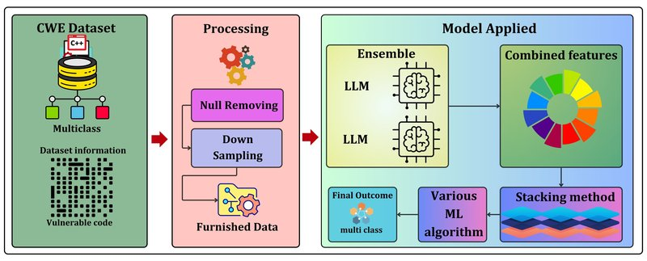
EnStack
An ensemble-stacking framework that combines CodeBERT, GraphCodeBERT, and UniXcoder through meta-classifiers for source-code vulnerability detection, outperforming individual models on Draper VDISC. IEEE BigData 2024.
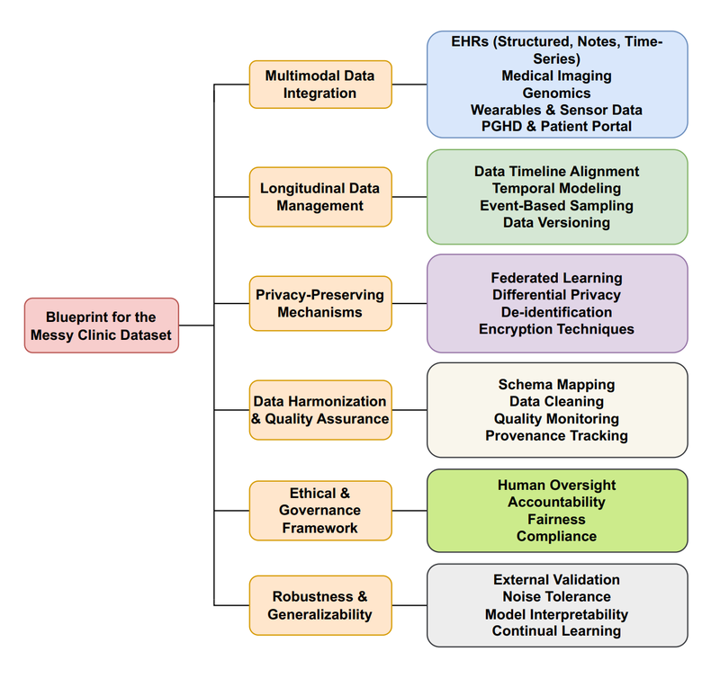
The Messy Clinic
A position paper arguing that robust clinical NLP needs messy, multimodal, longitudinal, privacy-preserving corpora, with a blueprint for building them. Findings of AACL-IJCNLP 2026; also presented at the EurIPS 2025 Workshop on Multimodal Representation Learning for Healthcare.
Earlier Work
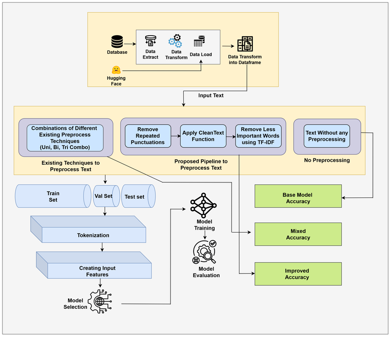
Efficient Clinical Text Cleaning
A preprocessing pipeline for clinical text with transformer encoders that preserves clinically relevant terms via TF-IDF filtering, improving accuracy on MIMIC-III and PubMed while cutting training time by up to 17%. Best Paper Award, IEEE IS 2024.
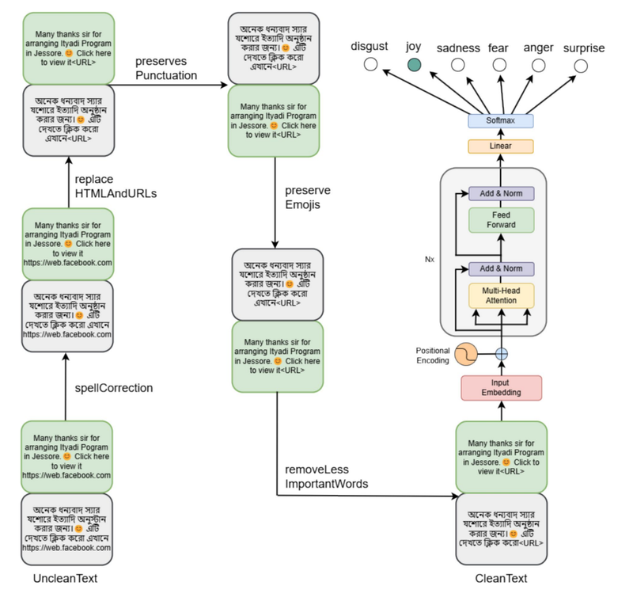
Context-Aware Data Cleaning for Bengali
Compares context-aware and traditional cleaning for Bengali text across four benchmarks, showing that preserving sentence-level context lifts transformer accuracy by up to 4%. SN Computer Science, 2025.
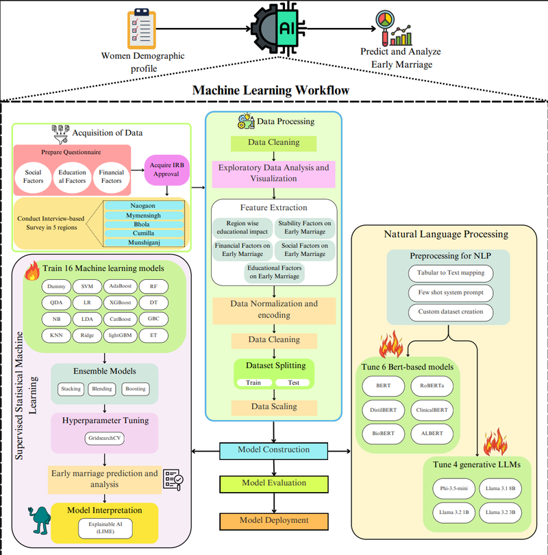
PANCHINI
Predictive analytics for child-marriage risk in Bangladesh using machine learning and LLM-based classifiers over socio-economic and demographic features. Under review.